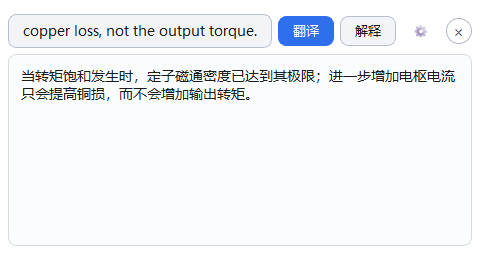
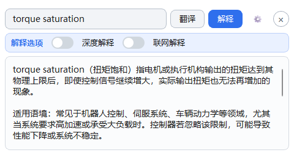
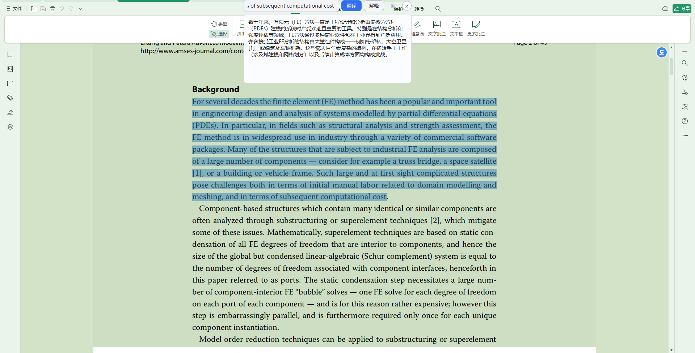
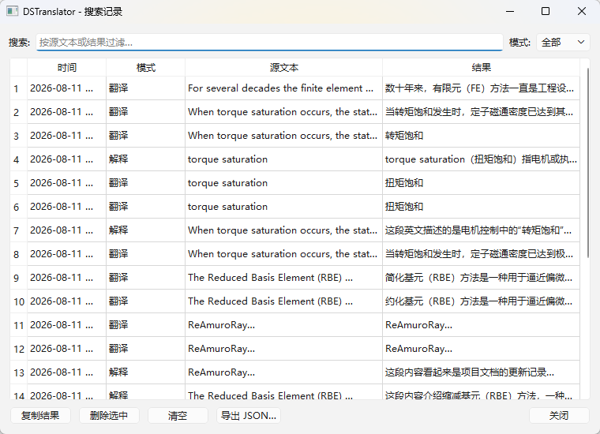
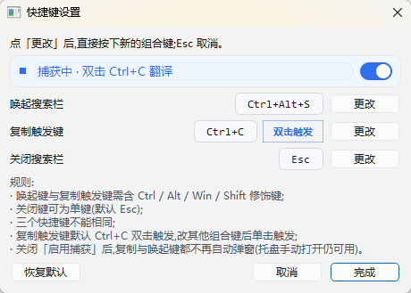
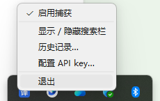

读学术论文其实要解决两件事——"这句话什么意思"（翻译）和"这个术语的物理意义是什么"（解释）。现有的工具，都只做了一半。
选中即出、同窗切换——不切应用，不打断阅读。
| 需求 | 翻译软件 | 词典 | DSTranslator |
|---|---|---|---|
| 整句翻译成中文 | ✓ | — | ✓ |
| 解释术语的物理意义 | ✗ | 有限 | ✓ 大模型驱动 |
| 任意应用就地悬浮，不打断阅读 | 部分 | ✗ | ✓ |
| 结合上下文理解 | ✗ | ✗ | ✓ |
左边是一篇论文里的一段英文。点一下按钮，模拟"双击 Ctrl+C"——先整句翻译；译完还有术语不懂，切到"解释"。
When torque saturation occurs, the stator flux density has reached its limit; further increasing the armature current raises only the copper loss, not the output torque.


一句话：翻译和解释，装进同一个悬浮窗。
任意应用选中外文，双击 Ctrl+C 触发。普通单次复制不受影响，不会误弹。
读论文遇到术语、名词，物理意义不清楚，切到"解释"标签，当场讲清它是什么。
一键开启思考模式，对难点给出更深入的分析。翻译、解释随开随切，自动重跑。
默认不联网，需要最新信息时可手动开启联网搜索，获取实时上下文。
置顶、无边框，可拖动、可缩放，看完自动收起——正正好，不多不少。
每次翻译/解释自动保存在本地，可按关键词搜索、一键复制、导出 JSON。
需要连着一串复制时，托盘一键暂停，互不干扰；随时再开。
API key 用 Windows DPAPI 加密，仅本机当前用户可解密；数据全部本地保存。




从下载到第一次翻译，三步。
下载绿色版，解压后双击 DSTranslator.exe。免安装，不用装 Python。
首次启动填入你的 DeepSeek API key，本地加密保存，仅你可解密。
在任意应用里选中外文，双击 Ctrl+C，翻译即刻弹出。
Release 中的绿色版 zip，可直接下载使用
翻译把整句英文译成中文，解决"这句话什么意思"；解释针对术语、名词，用中文讲清它背后的物理意义或概念，解决"这玩意儿到底是什么"。选中的同一段文字，两个标签随时切换。
翻译和解释由 DeepSeek 模型驱动，需要网络请求 API；默认不做联网搜索，只有你手动开启"联网解释"时才会上网查最新信息。
需要。首次启动时配置你自己的 key，之后本地加密保存，仅当前 Windows 用户可解密。
请求只发往 DeepSeek API 用于生成翻译/解释；默认不进行联网搜索。数据（历史记录、配置）全部保存在本地。
在程序目录下的 data/ 文件夹里。复制整个绿色版文件夹到新电脑即可完成迁移。
更多细节见《使用说明》。